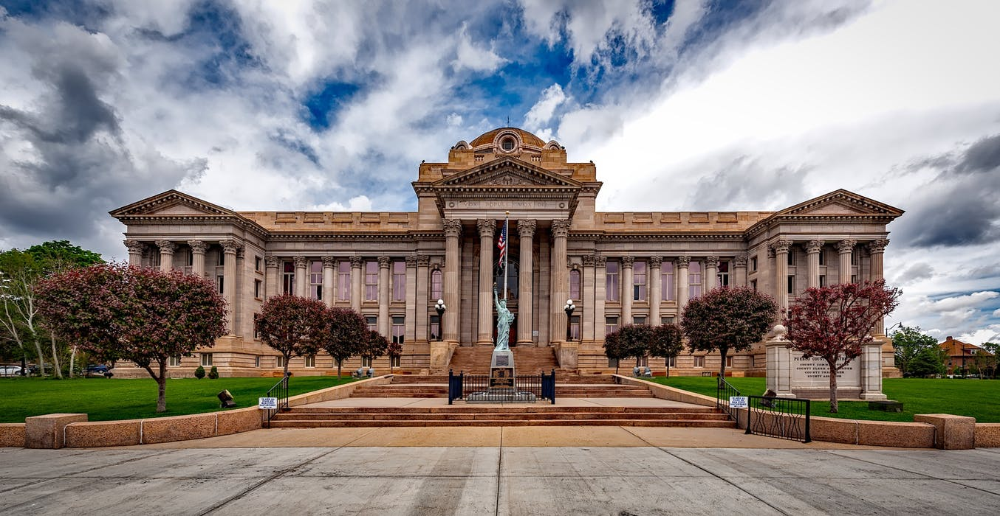

Den amerikanske revolusjon var en revolusjon i andre halvdel av 1700-tallet da de tretten koloniene som i dag utgjør USAs kyststater mot Atlanterhavet tilkjempet seg uavhengighet fra Storbritannia. I løpet av denne perioden samlet de tretten koloniene seg mot det britiske imperiet og innledet en tid med væpnet konflikt, kjent som den amerikanske uavhengighetskrigen, fra 1775 til 1783. Denne krigen endte med at det britiske imperiet tapte og ble tvunget til å undertegne Parisavtalen, denne avtalen gikk ut på at koloniene erklærte seg uavhengig og den satte grensene for det nye landet.

Frankrike spilte en viktig rolle som støtte for revolusjonen. Landet utstyrte de amerikanske patriotene med penger og våpen, organiserte en koalisjon mot Storbritannia og sendte en hær og en flåte som spilte en avgjørende rolle i ved beleiringen av Yorktown som i praksis avgjorde krigen. Men de amerikanske patriotene var sterkt påvirket av opplysningstidens ideer, var mot enevelde og så ikke den franske regjeringsformen som en modell. Den franske kongen prøvde også å overtale amerikanerne til å ikke gå med på Parisavtalen, dette var på grunn av at Frankrike prøvde å være den største handelspartneren med det nye landet, dette hadde hjulpet landet med både økonomien og det hadde svekket deres fiende; England.
Den amerikanske revolusjonen inkluderte en rekke store intellektuelle og sosiale endringer i det unge amerikanske samfunnet, særlig interessen for et republikansk styresett. I noen kolonier var det skarpe debatter over demokratiets rolle i organiseringen av staten. Endringen av opinionen i retning republikansk styresett og et gradvis utvidet demokrati ga store endringer i samfunnsstrukturen og la grunnlaget for de sentrale ideer som USA fremdeles styres etter. USA ble det første frie demokratiet siden antikken.

Den amerikanske revolusjonens begynnelse var i 1763 da den militære trusselen mot de engelske koloniene fra Frankrike opphørte. Storbritannia mente at koloniene måtte betale en vesentlig del av kostnadene for å forsvare dem og økte derfor skattene. Det var svært upopulært, ikke minst fordi koloniene ikke var representert i det britiske parlamentet og kolonistene hevdet at skatteøkningene derfor var ulovlige. Etter protester i Boston sendte britene tropper til byen, amerikanerne mobiliserte sin milits og kamper brøt ut i 1775. Selv om mellom 15-20 % av befolkningen besto av lojalister klarte britene kun å holde noen få byer ved kysten, 80-90 % av landområdet ble kontrollert av patrioter. I 1776 stemte representanter for de 13 koloniene enstemmig for å vedta en uavhengighetserklæring hvor de opprettet den nye staten USA. I 1778 inngikk amerikanerne en allianse med Frankrike som jevnet ut det militære og økonomiske styrkeforholdet. To større britiske hærstyrker ble
tatt til fange ved Saratoga i 1777 og ved Yorktown i 1781, det ledet til Parisavtalen i 1783. Den nye staten USA var da avgrenset av britisk Canada i nord, spansk Florida i sør og elven Mississippi i vest.
Etter Parisavtalen i 1783 var USA endelig uavhengig fra det britiske imperiet og landet hadde sine egne grenser, men det var ingen sentral styresmakt. I krigen hadde Den kontinentale kongress styrt styrkene og fungert som et midlertidig styresmakt, men nå som det endelig ble fred trengte man ledere til å styre landet. I 1787 ble grunnloven skrevet og i 1788 ble den tatt i bruk som landets offisielle grunnlov. Etter et valg ble George Washington (som hadde tjent som en hærfører under krigen) valgt til president av de tretten statene.